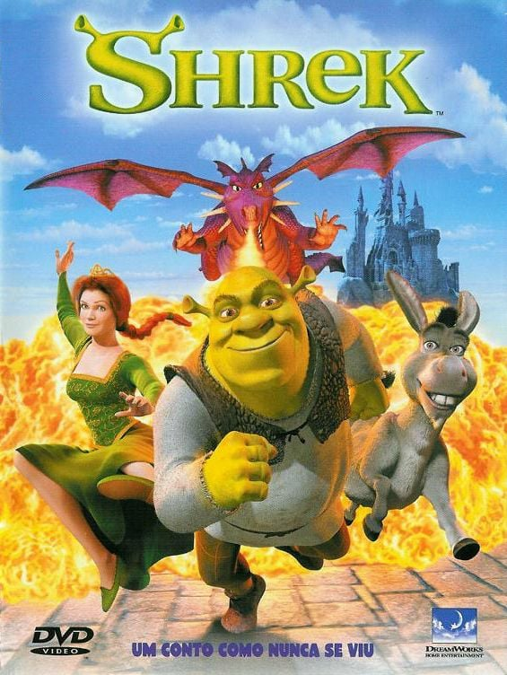
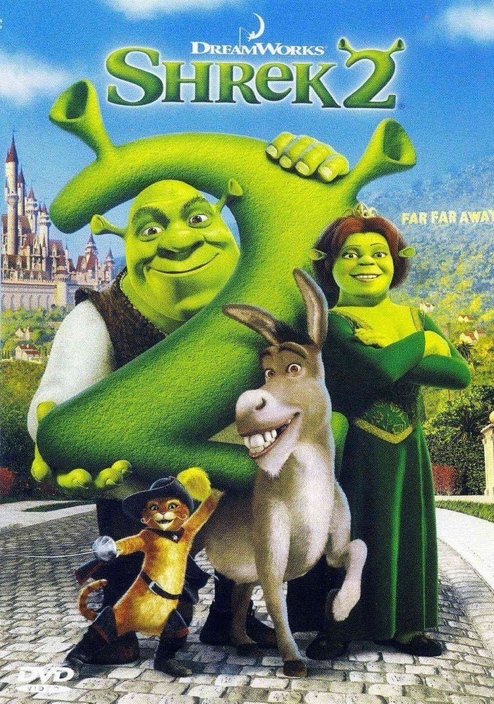

Shrek 1

Gênero: Animação / Comédia
Lançamento: 2001
Assistir trailer
Nota: ⭐⭐⭐⭐⭐⭐⭐⭐⭐☆ (9/10)
Em um pântano distante vive Shrek, um ogro solitário e ranzinza que tem sua paz interrompida quando o maldoso Lorde Farquaad expulsa todas as criaturas mágicas de seus reinos para as terras do ogro. Determinado a ter seu pântano de volta, Shrek faz um acordo com Farquaad: ele deve resgatar a bela Princesa Fiona, que está aprisionada em uma torre guardada por uma dragão cuspidora de fogo, para que ela se case com o Lorde. Acompanhado por um Burro falante e insistente, Shrek embarca em uma jornada que o fará descobrir que a verdadeira beleza vai muito além das aparências e que heróis podem surgir nos formatos mais inesperados.
Shrek 2

Gênero: Animação / Comédia
Lançamento: 2004
Assistir trailer
Nota: ⭐⭐⭐⭐⭐⭐⭐⭐☆☆ (8/10)
Após retornarem de sua lua de mel, Shrek e Fiona são convidados pelos pais da princesa para celebrar o casamento no Reino de Tão Tão Distante. No entanto, o Rei Harold e a Rainha Lillian não esperavam que sua filha e seu novo genro fossem ogros verdes. Enquanto Shrek luta para ganhar a aceitação dos sogros, ele precisa lidar com os planos maquiavélicos da Fada Madrinha, que deseja que Fiona se case com seu filho fútil, o Príncipe Encantado. Com a ajuda do Burro e do habilidoso Gato de Botas, Shrek enfrenta desafios mágicos e dilemas sobre sua própria aparência para garantir o "felizes para sempre" ao lado de seu grande amor.